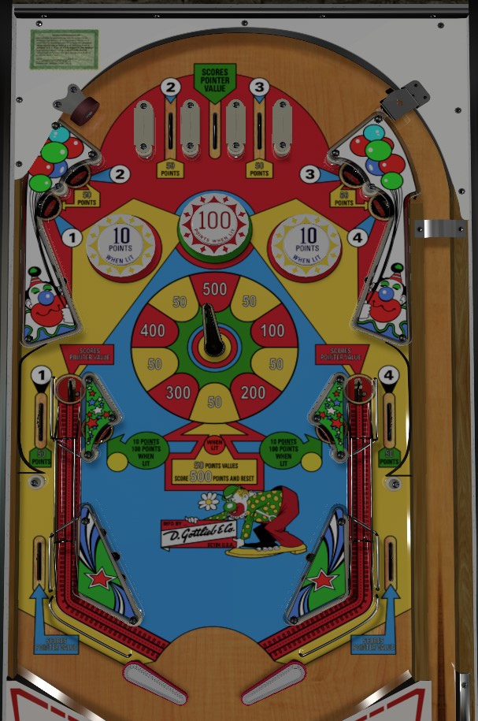

Not to be confused with Rollergames (Williams, 1990) or RollerCoaster Tycoon (Stern Pinball, 2002).
Move the pointer flipper into a new wedge of the wheel to score the value of the new wedge. Collecting 1-2-3-4 from the top lanes, side lanes, or upper standup targets lights the wheel so that the next time 50 points or scored, you get 500 points and 1-4 are unlit instead. Avoid this, opting instead for keeping the top bumpers lit; the 3 lights the center 100 bumper, and the 4 lights the outer bumpers for 10 points. Lit bumpers are more valuable long term since you'll constantly be shooting back to the top of the table.
The wheel in the center of the table has 10 segments: 5 score 50 points, and 1 each score 100, 200, 300, 400, and 500 points. Moving the pointer flipper by physically shooting the ball at it scores the value indicated by the pointer. The currently selected wheel value can also be scored at the center top lane, the out lanes, and the saucers. The saucers fling the ball downward, where it goes up then down a small ramp and through to the flipper with speed.
1, 2, 3, and 4 can each be picked up from one standup target and one rollover lane. All 4 standup targets are at the top of the table just above the bumpers. 2 and 3 are also at the top lanes; 1 and 4 are side lanes about halfway up the table. Hit a lit standup target or rollover lane to unlight it. Collecting 1 lights the lower right standup target for 100 points instead of 10; collecting 2 lights the lower left standup target; collecting 3 lights the center bumper for 100 points instead of 10; collecting 4 lights the outer bumpers for 10 points instead of 1. Collecting all of 1-2-3-4 lights the center wheel, making it so that the next time a wheel value of exactly 50 points is scored by any means, it will be worth 500 points instead, and the 1-2-3-4 light sequence will reset.
Collected numbers are never carried over from ball to ball.
The "roller coaster" saucers, about halfway up the table, are the only things that feed the in lanes. The ball gets kicked up a raised habitrail, then descends back down to playfield level. This feeds the ball to the flippers faster than almost any other EM game, and fast enough that in most cases, simply holding a flipper up will allow a ski pass to the opposite flipper for control. The ball can roll under the raised part of the habitrail, but the only place it can go is to the out lane. The roller coaster saucers and out lanes score the current pointer value.
There is no end of ball bonus, extra ball, or playfield special.